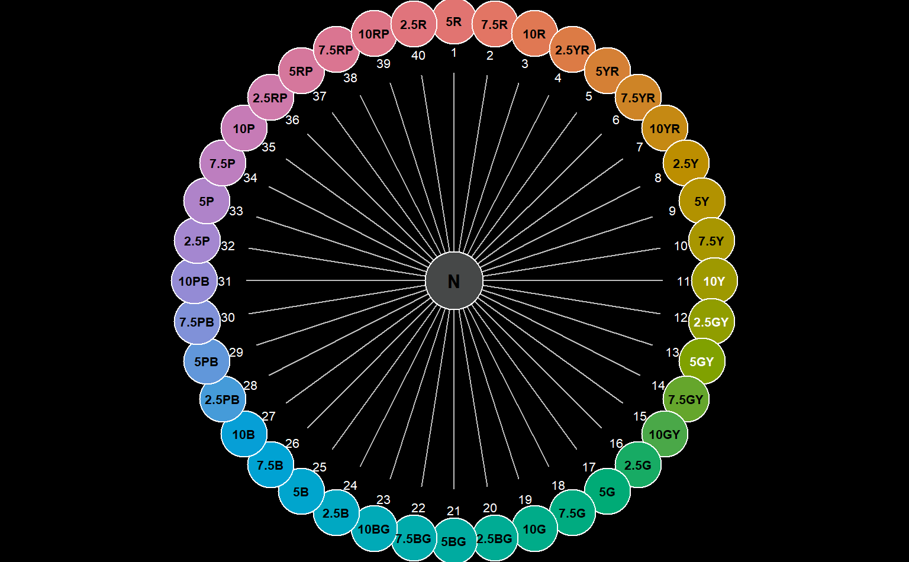
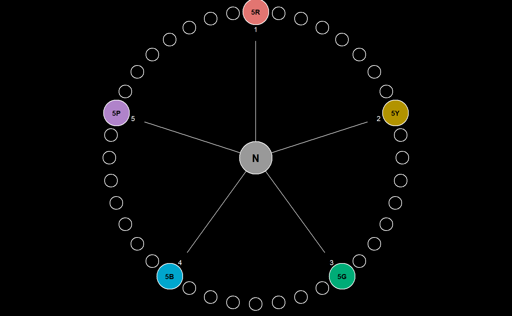

Munsell hues are arranged on the unit circle with "neutral" at the center.
huePositionCircle( hues = huePosition(returnHues = TRUE), value = 6, chroma = 10, chip.cex = 5.5, label.cex = 0.66, seg.adj = 0.8, seg.col = "grey", plot = TRUE )
| hues | vector of Munsell hues, commonly derived from |
|---|---|
| value | single integer, Munsell value used to create an actual color |
| chroma | single integer, Munsell chroma used to create an actual color |
| chip.cex | numeric, scaling for color chips |
| label.cex | numeric, scaling labels |
| seg.adj | numeric, scaling for line segment cues |
| seg.col | single color, color used for line segment cues |
| plot | logical, generate output on the current graphics device |
an invisible data.frame of data used to create the figure
The best results are obtained when setting margins to zero, and inverting foreground / background colors. For example: par(mar = c(0, 0, 0, 0), fg = 'white', bg = 'black').
Munsell book of color. 1976. Macbeth, a Division of Kollmorgen Corp., Baltimore, MD.
# better graphics defaults op <- par(mar = c(0, 0, 0, 0), fg = 'white', bg = 'black') # full set of hues, as generated by huePosition(returnHues = TRUE) huePositionCircle()  # subset huePositionCircle(hues = c('5R', '5Y', '5G', '5B', '5P'))  # reset graphics state par(op)